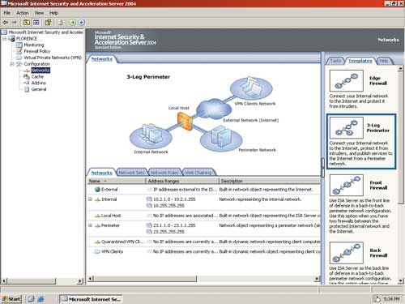
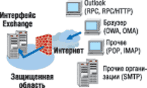
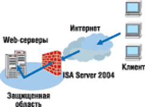
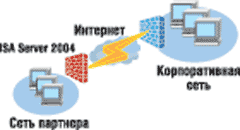
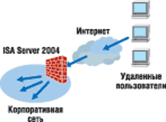
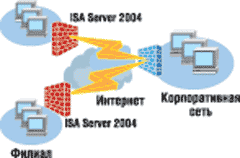
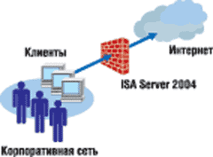
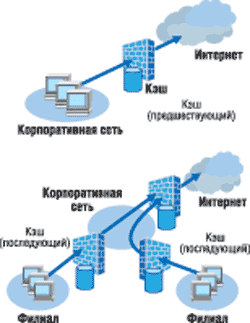

Андрей Колесов
* Статья подготовлена по материалам корпорации Microsoft.
В конце прошедшего лета корпорация Microsoft (http://www.microsoft.com) выпустила ISA (Internet Security and Acceleration) Server 2004 — серверное решение, объединяющее усовершенствованный трехуровневый межсетевой экран уровня приложений, средства организации и управления виртуальными частными сетями и службу кэширования Web-данных. Продукт предназначен для защиты информационных систем организаций любого размера — от малых предприятий до крупных корпораций — от внутренних и внешних атак и для оптимизации информационного трафика при работе с данными.
Первый продукт Microsoft, обеспечивающий безопасность корпоративных систем при взаимодействии с внешним миром, — Proxy Server (кодовое название Catapult) — появился в середине 1996 г. Спустя полтора года вышла его вторая версия, в которой была существенно повышена производительность межсетевого экрана, а также заметно расширены возможности кэширования. Следующий вариант системы разрабатывался более трех лет и был представлен на рынке в начале 2001 г. под новым названием Internet Security and Acceleration Server 2000, что должно было отразить качественные изменения в продукте (как по функционалу, так и по масштабируемости решения).
Именно с появлением ISA 2000 аналитики стали регулярно включать продукт Microsoft в свои обзоры корпоративных брандмауэров, хотя в число лидеров он чаще всего не входил. Судя по всему, выпуск ISA 2004 означает для Microsoft новый этап развития средств обеспечения информационной безопасности, и с его помощью корпорация намерена улучшить свои позиции в данном сегменте рынка.
В Microsoft ISA 2004 появилось много новшеств, которые мы рассмотрим ниже. А сейчас отметим лишь два наиболее существенных момента. Во-первых, в ISA 2004 полностью переработана внутренняя архитектура, что позволило не просто повысить производительность, но и обеспечить поддержку нескольких сетей одновременно и виртуальных частных сетей (Virtual Private Network, VPN), что позволяет применять сервер в качестве межсетевого экрана на периметре корпоративной сети или межсетевого экрана подразделения без изменения архитектуры сети. Во-вторых, реализован новый интерфейс пользователя, который за счет расширенных средств администрирования обеспечивает единое управление сетью VPN и межсетевым экраном с помощью удобного средства редактирования политик.
Ниже мы рассмотрим основные функции ISA 2004 с точки зрения его применения: межсетевой экран, Web-кэширование, инструменты управления и средства расширения. Кроме того, в таблице приведен краткий перечень технологических функций сервера с указанием степени их новизны.
Основные функции Microsoft ISA Server 2004 (выпуск Standard Edition)
| Возможности | Описание | |
| Поддержка нескольких сетей | ||
| Н | Конфигурация с поддержкой нескольких сетей | Проверка потока данных между определенными сетями. Можно настроить одну или несколько сетей, определить взаимоотношения между ними и политики доступа для каждой сети |
| Н | Особые политики для каждой из сетей | Помогает защитить сеть от внутренних и внешних угроз, ограничивая обмен данными между клиентами — даже в пределах одной организации |
| Н | Динамическая проверка всего потока данных | Проверка всех данных, проходящих через межсетевой экран, независимо от их источника и получателя, в контексте их протокола и состояния подключения |
| Н | Маршрутизация и преобразование сетевых адресов (NAT) | Определяет отношения между сетями в зависимости от разрешенного типа доступа и обмена данными между ними |
| Н | Сетевые шаблоны | Включает пять сетевых шаблонов, соответствующих общим сетевым топологиям. В случае использования одного из шаблонов для настройки политики межсетевого экрана ISA Server автоматически создаст необходимые правила и сетевые отношения |
| Виртуальные частные сети | ||
| У | Управление VPN | Встроенная поддержка возможностей VPN на основе службы маршрутизации и удаленного доступа Windows Server 2003. ISA Server 2004 может назначать IP-адреса подключающимся к сети клиентам VPN и применять политику ко всему удаленному потоку данных |
| Н | Политики безопасности и динамическая проверка для VPN | Позволяет настраивать клиенты VPN в качестве отдельной сети и создавать особые политики доступа для каждого клиента VPN. Механизм обработки правил использует политику доступа для проверки запросов от клиентов VPN, динамической проверки этих запросов и динамического создания и разрыва соединений между клиентами VPN и сети |
| Н | Интеграция с решениями VPN сторонних производителей | Поддержка протокола IPSec означает, что ISA Server 2004 может быть встроен в среды с инфраструктурами VPN от других производителей, включая те, где используются конфигурации с туннельным режимом IPSec для подключений типа «узел—узел» |
| Инфраструктура безопасности | ||
| У | Фильтрация приложений | Разнообразные новые возможности фильтрации приложений и сценариев публикации для серверов. Одна из новых возможностей, усовершенствованная фильтрация HTTP, специально предназначена для сервера Exchange Server, служб Outlook Web Access и Internet Information Services |
| Н | Расширенная поддержка протоколов | Можно использовать десятки стандартных протоколов для интеграции ISA Server 2004 с основными Интернет-приложениями. ISA Server 2004 позволяет управлять доступом к любому протоколу, включая протоколы IP-уровня и поток данных IPSec |
| У | Механизмы проверки подлинности | С помощью стандартных типов проверки подлинности или пространств имен Windows, RADIUS или RSA SecurID можно устанавливать подлинность пользователей, применяя правила к пользователям или группам пользователей в любом пространстве имен |
| У | Упрощенная модель политик | ISA Server 2004 теперь использует единый механизм обработки упорядоченных правил, обеспечивающий подробные механизмы для управления потоком данных и применения политик. С помощью механизма обработки правил администраторы могут управлять доступом к сетям и Интернету на основе имен пользователей, групп, приложений, адресов, расписания и типа передаваемых данных |
| Динамическая фильтрация пакетов | ISA Server 2004 сокращает риск внешних атак, открывая порты только в тех случаях, когда это необходимо | |
| У | Интеллектуальные фильтры приложений | Информационные фильтры, блокирующие только определенные типы данных, позволяют контролировать поток данных отдельных приложений, например, мультимедиа-потоки и электронную почту |
| У | Усовершенствованный клиентский межсетевой экран | Клиентская программа межсетевого экрана позволяет интегрировать проверку подлинности, автоматическую настройку Web-прокси и безопасность на основе ролей с помощью групповых политик. К ключевым усовершенствованиям относятся улучшенное взаимодействие сложных протоколов, поддержка многопользовательских учетных записей и обмен информацией с применением шифрования |
| Прозрачность для всех клиентов | ISA Server совместим с клиентами и серверами приложений на всех платформах, включая клиентов NAT и SecureNAT, причем не требуется никакого специального клиентского ПО | |
| У | Публикация | ISA Server 2004 позволяет размещать серверы за межсетевым экраном как в корпоративной, так и во внешней сети, и безопасно публиковать службы в Интернете |
| Преобразование ссылок | Функция преобразования служит для преобразования внутренних ссылок в ссылки, доступные извне | |
| Кэш | ||
| У | Правила кэширования | Централизованный механизм для установления правил кэширования позволяет настраивать правила извлечения и подачи объектов, сохраняемых в кэше |
| Эффективное распределение содержимого | Можно сократить время отклика и затраты на обеспечение пропускной способности, распределяя данные Web-сайтов и бизнес-приложений между серверами и располагая кэш с Web-контентом ближе к пользователям | |
| Высокопроизводительный Web-кэш | Web-кэширование обеспечивает более высокую скорость доступа пользователей к контенту и снижает нагрузку на сеть | |
| Интеллектуальное кэширование | Активное кэширование постоянно используемых объектов гарантирует их регулярное обновление для каждого пользователя. Существует возможность предварительной загрузки в кэш целых Web-сайтов по определенному расписанию | |
| Управление | ||
| У | Управление | Новые функции управления упрощают организацию безопасности сетей. Появились также новые элементы интерфейса пользователя, например, панели задач, панели справочной информации и новый вариант редактора политик межсетевого экрана с возможностью перетаскивания объектов |
| Н | Экспорт и импорт | Возможность экспорта и импорта данных конфигурации между компьютерами с ISA Server в формате XML позволяет легко выполнить репликацию конфигурации межсетевого экрана в случае развертывания нескольких узлов |
| Н | Инструментальная панель | Единое место для представления всей сводной ключевой информации результатов наблюдения. При наличии проблем легко перейти к средствам просмотра более подробной информации результатов наблюдения |
| Н | Средство просмотра журнала | Средство просмотра журнала позволяет отображать журналы межсетевого экрана в реальном времени — в оперативном режиме поступления информации или в режиме просмотра истории. С помощью фильтров можно найти определенные записи в полях журнала |
| У | Встроенные отчеты | Возможность создания по расписанию стандартных отчетов об использовании сети и приложений, моделях передачи данных в сети и безопасности |
| Примечание: Н — новинка; У — улучшено | ||
Межсетевой экран предприятия
Многоуровневый межсетевой экран. Для достижения максимального уровня безопасности сетей предприятий используется фильтрация пакетов, фильтрация каналов и фильтрация потока данных приложений.
Динамическая фильтрация пакетов выявляет пакеты, которые будут пропущены в защищенные области сети, а также к прокси-службам прикладного уровня. При этом по мере необходимости автоматически выполняется открытие (а по завершении сеанса связи — закрытие) соответствующих портов.
Фильтрация каналов обеспечивает прозрачный для приложений шлюз для межплатформенного доступа к telnet, RealAudio, Windows Media, IRC (Internet Relay Chat), а также ко многим другим протоколам и службам Интернета. В отличие от других межсетевых экранов, фильтрация каналов в ISA Server 2004 работает совместно с динамической фильтрацией пакетов, что упрощает ее использование и повышает общую безопасность работы сети.
Фильтрация и динамическая проверка данных приложений способна распознавать команды протоколов (например, НТТР, FTP и Gopher), поступающие от клиентских компьютеров. Сервер ISA Server имперсонирует во внутренней сети клиентские компьютеры, скрывая от внешней среды внутреннюю топологию сети и IP-адреса предприятия.
Динамическая проверка данных приложений. ISA Server 2004 динамически проводит интеллектуальную проверку на уровне приложений потока данных, проходящего через межсетевой экран. Во избежание возможных разрывов подключения или нарушения системы безопасности это делается с учетом контекста данных приложения и состояния подключения.
Интеллектуальная фильтрация данных приложений. Помимо базовой фильтрации данных, сервер ISA Server 2004 контролирует поток данных приложений, распознавая в нем данные и команды при помощи специальных фильтров. Средства интеллектуальной фильтрации позволяют на основе анализа содержания потока данных пропускать, блокировать, перенаправлять или изменять данные протоколов HTTP, FTP, SMTP, POP3, DNS, данных конференций по протоколу H.323, потокового мультимедиа, удаленного вызова процедур и VPN.
Безопасная публикация. Механизм безопасной публикации серверов позволяет защитить от внешних атак в Интернете Web-серверы, почтовые серверы и приложения электронной торговли. ISA Server способен выдавать себя за опубликованный сервер, реализуя дополнительный уровень защиты. Для защиты внутренних серверов в правилах Web-публикации можно определить доступные компьютеры, а правила публикации средств управления сервером защищают внутренние серверы от незаконного доступа со стороны внешних пользователей. Кроме того, опубликованные серверы защищены от атак извне с помощью интеллектуальной фильтрации данных приложений.
Обнаружение вторжений. Интегрированный компонент обнаружения вторжений (разработанный на основе технологии компании Internet Security Systems) уведомляет пользователя и предпринимает необходимые действия в случае обнаружения попытки незаконного проникновения в сеть (например, сканирования портов, использования средств WinNuke или Ping of Death).
Встроенная поддержка VPN. Для предоставления стандартного безопасного удаленного доступа используются встроенные службы виртуальных частных сетей Windows 2000 и Windows Server 2003. ISA Server 2004 поддерживает безопасные VPN-подключения филиалов или удаленных пользователей к основному офису. Политика межсетевого экрана применяется к VPN-подключениям и позволяет точно контролировать те протоколы и ресурсы, к которым получают доступ пользователи таких подключений.
Прозрачность межсетевого экрана. Механизм SecureNAT путем замены внутреннего IP-адреса на внешний предоставляет прозрачный доступ к межсетевому экрану и защиту для всех IP-клиентов (независимо от конфигурации клиента и не требуя специального ПО). Сложные фильтры прикладного уровня, которые служат для управления подключением, предоставляют комплексную поддержку клиентам SecureNAT.
Проверка подлинности пользователей. Для клиентов Web-прокси и межсетевого экрана ISA Server 2004 поддерживает аутентификацию Windows (NTLM и Kerberos). Для клиентов Web-прокси поддерживаются клиентские сертификаты, выборочная, базовая, анонимная проверка подлинности, а также проверка подлинности на основе форм. Проверка подлинности пользователей может проводиться по данным локальной базы данных на межсетевом экране, Active Directory или с помощью службы RADIUS.
Мост SSL-SSL. Для серверов, использующих доступ только по зашифрованным и проверенным каналам, ISA Server 2004 поддерживает механизм фильтрации моста SSL-SSL. В отличие от большинства межсетевых экранов, в ISA Server 2004 зашифрованные данные могут быть проверены до попадания на сервер. Межсетевой экран расшифровывает поток SSL, проводит динамическую проверку, а затем повторно шифрует и пересылает данные опубликованному Web-серверу.
Сервер Web-кэширования
Высокопроизводительное Web-кэширование. Повышена производительность Web-кэширования для внутренних клиентов, получающих доступ к серверам Интернета, а также внешних пользователей Интернета, которые подключаются к Web-серверу предприятия. Для достижения максимальной производительности ISA Server 2004 использует быстрое кэширование в оперативной памяти и оптимизированный дисковый кэш.
Интеллектуальное кэширование. Благодаря активному кэшированию часто используемых объектов пользователь получает Web-контент последней версии. ISA Server 2004 автоматически определяет часто используемые Web-сайты, а также необходимую частоту обновления их содержания (на основании продолжительности пребывания объекта в кэше или времени последнего извлечения объекта). В периоды низкого потребления сетевых ресурсов ISA Server 2004 без вмешательства диспетчера сети предварительно загружает Web-контент в кэш. Кроме того, Web-кэш ISA Server 2004 можно использовать для предварительной загрузки автономного контента, которое хранится на компакт- или DVD-дисках.
Кэширование по графику. Существует возможность предварительной загрузки в кэш целых Web-сайтов по определенному графику. За счет этого можно предоставить пользователям на предприятии доступ к контенту на автономных Web-серверах.
Управление межсетевым экраном
Управление доступом с помощью политик. Организация может контролировать входящий и исходящий доступ по пользователям, группам, приложениям, источникам и местам назначения, по изменению контента, а также по расписанию. С помощью мастеров политик межсетевого экрана задаются доступные Web-сайты и контент, доступность определенного протокола для установки входящих и исходящих подключений, а также разрешения на установку подключений между определенными IP-адресами с помощью заданных протоколов и портов.
Упрощенное управление. В ISA Server 2004 конфигурацию межсетевого экрана можно целиком скопировать в файл XML. Затем такой файл переносится на сменный носитель или отправляется в составе безопасного почтового сообщения администратору другого межсетевого экрана, чтобы обеспечить стандартную конфигурацию в рамках всей организации. Кроме того, можно скопировать в файл XML, а затем импортировать и отдельные элементы конфигурации.
Интеграция с Active Directory. Межсетевой экран ISA Server 2004 для проверки подлинности входящих и исходящих подключений использует базу данных пользователей Active Directory.
Графические панели задач и мастера конфигурации. Эти средства упрощают навигацию и настройку стандартных задач. Так, с помощью мастера можно опубликовать сервер Exchange в сети под защитой компьютера ISA Server 2004, настроить межсетевой экран на выполнение функций сервера или шлюза VPN или создать новое правило межсетевого экрана (рис. 1).
|  |
| Рис. 1. Управление конфигурацией сервера.
|
Удаленное управление. Управлять работой ISA Server 2004 можно в удаленном режиме с помощью оснастки MMC, служб терминалов Windows 2000 и удаленного рабочего стола Windows Server 2003. Для удаленного управления межсетевым экраном на компьютере Windows Server 2003 может использоваться безопасное туннелирование SSL/RDP. Кроме того, удаленное управление службами ISA Server 2004 возможно с помощью сценариев, запускаемых из командной строки.
Журналы, отчеты и оповещения. В стандартных форматах (текстовые файлы с символами-разделителями, базы данных SQL и MSDE) создаются подробные журналы безопасности и доступа. Кроме того, есть возможность создавать по определенному графику стандартные отчеты об использовании сети и приложений, моделях потока сетевых данных и безопасности с автоматической публикацией в локальной папке или на удаленном общем ресурсе. Оповещения на основе событий служат для отправки сообщений администратору, запуска и остановки служб межсетевого экрана, а также автоматического выполнения действий на основании заданных критериев.
Управление на уровне пользователя. Существует возможность ограничить доступ клиентов межсетевого экрана и Web-прокси ISA Server 2004 для каждого отдельного пользователя (а не просто по IP-адресам), что позволяет более точно контролировать входящий и исходящий доступ по всем протоколам.
Расширяемая платформа
ISA Server 2004 поддерживает многие протоколы Интернета, в том числе HTTP/SSL, FTP, RDP, telnet, RealAudio и RealVideo, IRC, H.323, потоковое мультимедиа Windows, почтовые и новостные протоколы.
Независимые разработчики предлагают программы (например, антивирусное ПО, средства управления, фильтрации содержания и составления отчетов), предназначенные для использования с ISA Server, с учетом особенностей продукта. Так, существуют фильтры сторонних разработчиков, с помощью которых можно предотвратить загрузку в защищенную сеть предприятия последних версий вирусов, сценариев Java и элементов управления ActiveX.
В состав ISA Server 2004 включены подробные файлы справки Software Development Kit по разработке средств на основе функций межсетевого экрана, кэширования и управления продуктом, а также полная документация API и примеры создания дополнительных Web-фильтров и фильтров приложений, оснасток ММС, средств составления отчетов, сценариев, оповещений и т. д.
Сценарии применения Microsoft ISA Server 2004
В ISA Server 2004 реализована функциональность, способная обеспечить безопасность, производительность, управляемость и экономическую эффективность работы сетей в организациях любого размера. Ниже мы рассмотрим несколько основных сценариев развертывания сервера.
Предоставление доступа к электронной почте сотрудникам за пределами сети. Интерфейс ISA Server 2004 позволяет быстро установить защиту сервера Exchange в Интернете (рис. 2). Чтобы ускорить развертывание и снизить риск создания ошибочной конфигурации, выполнение стандартных задач автоматизируется с помощью мастера Web-публикации почтового сервера.
Кроме того, ISA Server 2004 предотвращает возможные атаки на почтовые серверы. Команды, которые направлены на использование возможных уязвимостей или раскрытие избыточной информации, блокируются. В системе предусмотрена возможность предварительной проверки подлинности пользователей, что позволяет блокировать потенциально опасные анонимные запросы до их попадания на сервер Exchange.
|  | Рис. 2. Предоставление доступа к электронной почте сотрудникам за пределами сети.
|
Предоставление данных корпоративной интрасети через Интернет. В ISA Server 2004 реализован безопасный метод доступа к приложениям внутренней корпоративной сети из Интернета (рис. 3) путем Web-публикации и публикации сервера. Интегрированные мастера автоматизируют выполнение стандартных задач и снижают риск создания ошибочной конфигурации.
Средства преобразования ссылок осуществляют интеллектуальное преобразование внутренних ссылок в адреса внешних Web-сайтов. Благодаря усовершенствованным защитным функциям ISA Server 2004 может контролировать допустимость содержания потока данных и принудительно подставлять разрешенные URL-адреса.
|  | Рис. 3. Предоставление данных корпоративной интрасети через Интернет.
|
Предоставление партнерам доступа к данным внутри корпоративной сети. С помощью интегрированного компонента VPN пользователи сервера ISA Server 2004 могут подключать партнеров к своей сети (рис. 4), одновременно ограничивая доступ к определенным серверам и приложениям. Для обеспечения конфиденциальности и целостности данных ISA Server 2004 шифрует весь поток данных между внутренними сетями внешних организаций и корпоративной сетью предприятия. Серверы конечных точек VPN-подключения проверяют подлинность друг друга, после чего ISA Server 2004 применяет политики доступа и маршрутизации, ограничивающие доступ партнера к корпоративной сети. Кроме того, пользователи ISA Server 2004 для защиты корпоративной сети от возможных атак на прикладном уровне могут назначать строгие правила фильтрации данных приложений.
|  | Рис. 4. Предоставление партнерам доступа к данным внутри корпоративной сети.
|
Предоставление удаленного доступа сотрудникам с одновременной защитой корпоративной сети от возможных атак. С помощью усовершенствованной фильтрации на уровне приложений ISA Server 2004 защищает сеть от неконтролируемых удаленных компьютеров, устанавливающих VPN-подключение к корпоративной сети (рис. 5). Кроме того, в процессе проверки и анализа потока данных блокируются вирусы и "черви". Пользователям и группам VPN могут быть назначены гибкие сетевые политики, предоставляющие доступ только к определенным серверам и приложениям. Наконец, ISA Server 2004 может автоматически блокировать доступ к сети с клиентских компьютеров, не соответствующих принятым на предприятии политикам в отношении установленных пакетов обновления, средств антивирусной защиты и других критериев.
|  | Рис. 5. Предоставление удаленного доступа для сотрудников с одновременной защитой корпоративной сети от возможных атак.
|
Взаимодействие филиалов с основным офисом через Интернет. Входящий в состав сервера ISA Server 2004 VPN-шлюз позволяет администратору объединять различные сети, например, основного офиса и филиалов (рис. 6) с помощью VPN-подключения «узел в узел». Функция маршрутизатора VPN туннельного режима IPSec используется для управления доступом пользователей, групп, узлов, компьютеров, протоколов и данных уровня приложений при подключениях «узел в узел». Пользователи имеют доступ только к разрешенному содержанию удаленной сети, а пользователи удаленной сети имеют доступ только к явно предоставленным ресурсам локальной сети.
|  | Рис. 6. Взаимодействие филиалов с основным офисом через Интернет.
|
Управление доступом к Интернету и защита клиентов от возможных атак из Интернета. Для управления доступом к Интернету (рис. 7) служат гибкие политики межсетевого экрана, которые позволяют блокировать Web-сайты и фильтровать контент в целях повышения производительности труда пользователей и отсечения нежелательного содержания. За счет интеграции с Active Directory можно создавать элементы управления доступом для разных организационных ролей и должностных уровней.
|  | Рис. 7. Управление доступом к Интернету и защита клиентов от возможных атак.
|
С помощью усовершенствованной фильтрации данных протокола HTTP можно блокировать использование встроенных приложений, например, голосовых, видео и других одноранговых служб или средств обмена мгновенными сообщениями. Реализованные в сервере ISA Server 2004 средства фильтрации данных приложений позволяют защитить рабочие компьютеры и серверы от возможных атак, повышая надежность сетевой среды предприятия.
Кроме того, предотвращению возможных атак способствует фильтрация потока данных: внутренние клиенты недоступны за пределами сети, ответный входящий поток данных подвергается проверке, и допускается подключение надстроек сторонних производителей, обеспечивающих защиту от вирусов.
Быстрый доступ к часто используемому Web-контенту. Средства предварительной загрузки позволяют администратору вручную указать те Web-сайты, к которым обращаются наиболее часто, с тем чтобы предварительно загрузить их контент, а с помощью активного кэширования сервер ISA Server 2004 распознает закономерности в Web-потоке данных и автоматически загружает контент часто запрашиваемых Web-сайтов (рис. 8). В случае необходимости ISA Server 2004 направляет специальные запросы внешним серверам кэширования. Кроме того, встроенная проверка подлинности позволяет проверять исходящие запросы на соответствие заданным условиям.
|  | Рис. 8. Быстрый доступ к часто используемому Web-контенту.
|
***
Сервер ISA Server 2004, компонент системы Microsoft Windows Server System — надежное, простое и экономически выгодное решение, помогающее ИТ-специалистам бороться с возникающими угрозами безопасности. В настоящее время ISA 2004 представлен выпуском Standard Edition. В конце текущего года ожидается выход варианта Enterprise Edition, в котором будут расширены возможности управления распределенным комплексом серверов для создания маштабируемых решений корпоративного уровня.